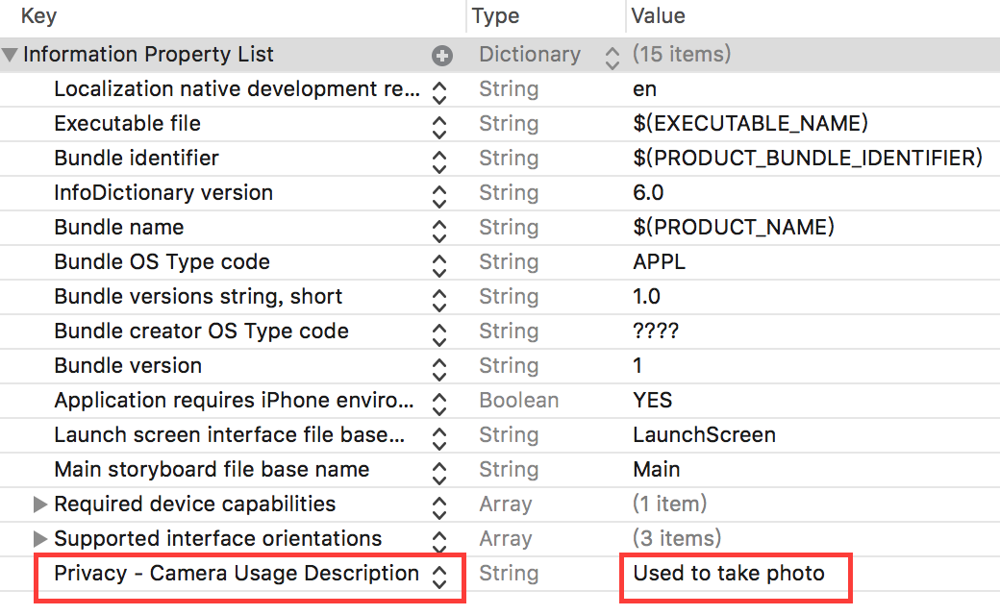

APP如果要在iOS 10的環境使用照相機，必須取得使用者同意(還有其它功能也需要，細節請參考連結)
在寫mini project時，因為xcode 8需要手動加入設定，否則會出現錯誤訊息
This app has crashed because it attempted to access privacy-sensitive data without a usage description. The app’s Info.plist must contain an NSCameraUsageDescription key with a string value explaining to the user how the app uses this data.
log要我們加入NSCameraUsageDescription key到Info.plist
在專案的info.plist加上Privacy Camera Usage Description
並給它一個值

完成後APP在iOS 10環境下執行時便會詢問使用者允不允許APP存取相機。